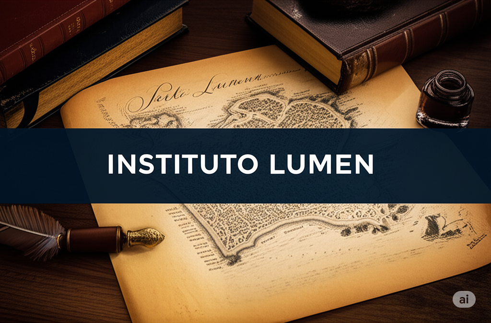

Nossa História
A nossa empresa começou pequena, com grandes sonhos...
Em 1958, na efervescente Porto Alegre, um grupo de intelectuais visionários compartilhou um sonho: criar uma instituição de ensino superior que fosse um farol de conhecimento e inovação para o Rio Grande do Sul. Inspirados pelas tradições acadêmicas europeias e pelo espírito progressista da capital gaúcha, eles se reuniram em um antigo casarão no bairro Cidade Baixa para esboçar os primeiros planos do que viria a ser o Instituto Lumen.
Liderados por figuras como o Professor Emérito Dr. Antônio Flores da Cunha, renomado estudioso de Filosofia, e a Dra. Isabella Vargas, pioneira em Estudos Sociais, o grupo dedicou anos à elaboração de um projeto pedagógico robusto e multidisciplinar. Acreditavam que a verdadeira educação ia além da simples transmissão de conteúdo, buscando despertar o senso crítico, a curiosidade intelectual e a capacidade de transformar a sociedade.
Os primeiros cursos oferecidos pelo Instituto Lumen refletiam essa visão abrangente: Filosofia, Letras, Direito e Ciências Sociais. Com um corpo docente altamente qualificado e uma abordagem de ensino centrada no debate e na pesquisa, o Instituto rapidamente conquistou reconhecimento por sua excelência acadêmica.
Ao longo das décadas, o Instituto Lumen acompanhou o desenvolvimento de Porto Alegre e do Brasil, ampliando sua oferta de cursos para áreas como Engenharia, Administração e Artes. Sempre comprometido com a qualidade e a inovação, formou milhares de profissionais que se destacaram em suas áreas de atuação, contribuindo significativamente para o progresso social e econômico da região.
Hoje, o Instituto Lumen é uma referência no ensino superior do Rio Grande do Sul, mantendo viva a visão de seus fundadores: ser um centro de excelência acadêmica que ilumina o caminho para o futuro, formando cidadãos éticos, críticos e engajados com o mundo. O antigo casarão que abrigou as primeiras reuniões ainda faz parte do campus, como um símbolo da história e dos valores que fundamentam a instituição.
Hoje, somos referência no mercado, sempre buscando inovação. O Instituto Lumen sempre soube que a excelência de uma instituição de ensino reside em seu corpo docente. Ao longo dos anos, reuniu uma equipe de professores apaixonados, dedicados e com vasta experiência em suas respectivas áreas. Cada membro da atual equipe traz consigo uma história única, marcada pela busca incessante pelo conhecimento e pelo desejo de compartilhar suas descobertas com as novas gerações.
Entre eles, encontramos a Dra. Sofia Mendes, uma renomada física teórica cujas aulas eletrizantes desvendam os mistérios do universo, inspirando os alunos a questionar e a explorar as fronteiras da ciência. Sua pesquisa inovadora em cosmologia já lhe rendeu reconhecimento internacional, mas sua verdadeira paixão está na sala de aula, onde estimula o pensamento crítico e a curiosidade científica.
Há também o Professor Marcelo Vieira, um mestre da literatura brasileira, cuja capacidade de dar vida aos clássicos e contemporâneos encanta os estudantes. Com sua didática envolvente e seu profundo conhecimento da cultura nacional, ele não apenas ensina sobre livros, mas também sobre a história e a identidade do Brasil.
A inovação pedagógica encontra sua personificação na figura da Dra. Lívia Torres, especialista em tecnologias educacionais. Ela lidera projetos que integram ferramentas digitais e metodologias ativas no processo de aprendizagem, tornando as aulas mais dinâmicas e interativas. Sua visão vanguardista contribui para que o Instituto Lumen esteja sempre à frente nas práticas de ensino.
E não podemos esquecer do Professor Ricardo Alves, um experiente advogado cuja paixão pelo direito constitucional é contagiante. Com sua vasta experiência prática e sua clareza de raciocínio, ele prepara os futuros juristas para os desafios da profissão, incentivando-os a defender a justiça e a ética.
Estes são apenas alguns exemplos da riqueza e da diversidade do corpo docente do Instituto Lumen. Cada professor, com sua trajetória e sua paixão, contribui para criar um ambiente de aprendizado estimulante e transformador, reafirmando o compromisso da instituição com a formação de profissionais competentes e cidadãos conscientes. A história do Instituto Lumen se entrelaça com a história de seus mestres, que dedicam suas vidas a iluminar o caminho do conhecimento para seus alunos.